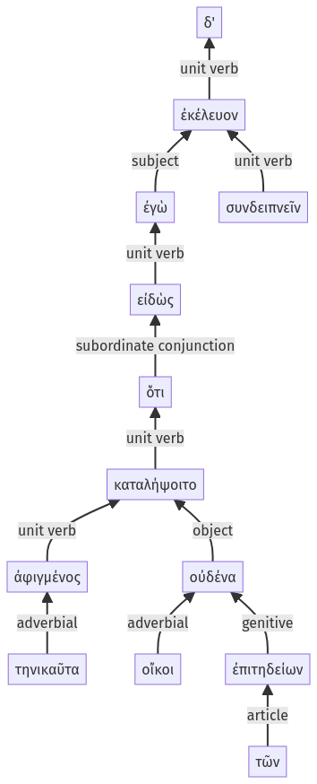

Lysias, Oration 1, 1.23.1-1.23.13a
1.22.33-1.22.39a | 1.23.14-1.23.23a
Sentence 62
1.23.1-1.23.13a
εἰδὼς δ' ἐγὼ ὅτι τηνικαῦτα ἀφιγμένος οὐδένα καταλήψοιτο οἴκοι τῶν ἐπιτηδείων, ἐκέλευον, συνδειπνεῖν:
2 εἰδὼς
1 ἐγὼ
3 ὅτι τηνικαῦτα
4 ἀφιγμένος
3 οὐδένα καταλήψοιτο οἴκοι τῶν ἐπιτηδείων
1 ἐκέλευον
2 συνδειπνεῖν
εἰδὼς δ' ἐγὼ ὅτι τηνικαῦτα ἀφιγμένος οὐδένα καταλήψοιτο οἴκοι τῶν ἐπιτηδείων, ἐκέλευον, συνδειπνεῖν:
Highlighting:
- connecting words
- unit verb
- subject
- object
Color code:
- independent clause (level 1, transitive verb)
- infinitive in indirect statement (level 2, intransitive verb)
- circumstantial participle (level 2, transitive verb)
- subordinate clause (level 3, transitive verb)
- circumstantial participle (level 4, intransitive verb)
